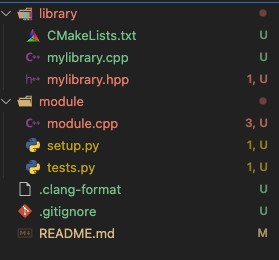

Pybind11 Tutorial#
For some time now, our team has been developing financial applications, and we frequently encounter the need to integrate them with other tools written in different languages. While REST APIs are very useful for integration, C++ (the language we use for these tools) doesn’t offer many great integration tools. A good alternative is to translate C++ into another language and work from there. In this context, pybind11 is a great option because it allows us to seamlessly migrate C++ code to Python. Below is a simple tutorial on how to use pybind11 to expose C++ code in Python.
Tutorial Objective#
The assumption here is that if we’re attempting a language migration, it’s because we want to use tools available in another language that can help our development. In this case, the core logic of our application is already implemented, and we just need a framework to easily move between languages. The beauty of pybind11 is that it provides a simple framework for this purpose. There are other tools that can do the same (such as SWIG), each with its own pros and cons, but they will not be covered in this tutorial.
Setup#
The first thing you need is a C++ project. I created a repository where you can find the files for this tutorial:
See also
To run this tutorial, you need to have:
A C++ compiler supporting C++11 or later.
The Python package pybind11 installed (
pip install pybind11).CMake, which simplifies cross-platform compilation.
C++ Library#
Here’s a basic C++ library that we want to migrate to Python:
#ifndef D3C623E9_FC36_4EEF_9ED6_46B293F1B764
#define D3C623E9_FC36_4EEF_9ED6_46B293F1B764
#include <map>
namespace FinLib {
using Date = double;
using Cashflows = std::map<Date, double>;
enum Frequency { Monthly, Quarterly, Semiannual, Annual, Once };
class Bond {
public:
Bond(Date startDate, Date endDate, Frequency paymentFrequency, double notional, double couponRate);
Cashflows cashflows() const;
private:
Date startDate_, endDate_;
Frequency paymentFrequency_;
double notional_, couponRate_;
Cashflows cashflows_;
};
class Deposit : public Bond {
public:
Deposit(Date startDate, Date endDate, double notional, double rate);
};
inline double pv(const Cashflows& cashflows, double discountRate) {
double pv = 0;
for (auto& cf : cashflows) {
pv += cf.second / (1 + discountRate * cf.first);
}
return pv;
}
inline double pv(const Bond& bond, double discountRate) {
return pv(bond.cashflows(), discountRate);
}
}; // namespace FinLib
#endif
The relevant part of this script is not what it does or it’s methods, but what we want to expose in Python. In this case we have:
A class
Bondwith a methodcashflows.A function
pvthat calculates the present value of cashflows.In this example, we can see that the enum
Frequencyis at the root of the namespaceFinLib.
The implementation is in the file mylibrary.hpp, which is not relevant for this tutorial but readers can find it in the repository.
module.cpp file#
Once our C++ library is written and working, we need to provide instructions to pybind11 so that it can interpret our classes and present them in Python as desired. We do this by writing a small source file (the filename is not important).
#include "../library/mylibrary.hpp"
#include <pybind11/pybind11.h>
#include <pybind11/stl.h>
namespace py = pybind11;
PYBIND11_MODULE(FinLib, m) {
m.doc() = "Financial Library";
py::enum_<FinLib::Frequency>(m, "Frequency")
.value("Monthly", FinLib::Frequency::Monthly)
.value("Quarterly", FinLib::Frequency::Quarterly)
.value("Semiannual", FinLib::Frequency::Semiannual)
.value("Annual", FinLib::Frequency::Annual)
.value("Once", FinLib::Frequency::Once)
.export_values();
py::class_<FinLib::Cashflows>(m, "Cashflows").def(py::init<>());
py::class_<FinLib::Bond>(m, "Bond")
.def(py::init<FinLib::Date, FinLib::Date, FinLib::Frequency, double, double>())
.def("cashflows", &FinLib::Bond::cashflows);
py::class_<FinLib::Deposit, FinLib::Bond>(m, "Deposit")
.def(py::init<FinLib::Date, FinLib::Date, double, double>());
m.def("cashflowPV", py::overload_cast<const FinLib::Cashflows&, double>(&FinLib::pv), "Calculates PV of cashflows");
m.def("bondPV", py::overload_cast<const FinLib::Bond&, double>(&FinLib::pv), "Calculates PV of a bond");
}
First, let’s highlight the include headers:
include <pybind11/pybind11.h>: In this tutorial, we install our module with setuptools, so it is not necessary to download the pybind11 repository manually. In fact, installing the Python package automatically provides the header filesinclude <pybind11/stl.h>: To automatically convert standard library types (in our case, the map behind Cashflows), this header must be included
The pybind11 syntax is fairly self-explanatory, but here’s a brief walkthrough. First, note that the module is contained within the PYBIND11_MODULE macro. Its arguments are the name we want to give our library – FinLib in this example – and a parameter of type py::module_, which serves as the entry point for our module.
Important
The name of our module must be provided without quotes and must be identical to the one defined in setup.py, which we will cover next.
py::enum_#
This template is used to export enumerations to Python. As template parameters, we use the same enum defined in our library. Here are some useful notes:
The names we use in our definitions – not only for enums but for all pybind11 methods – do not necessarily need to match the real function names. For example, one could define:
py::enum_<FinLib::Frequency>(m, "Frecuencia")
.value("Monthly", FinLib::Frequency::Monthly)
.value("Quarterly", FinLib::Frequency::Quarterly)
.value("Semiannual", FinLib::Frequency::Semiannual)
.value("Annual", FinLib::Frequency::Annual)
.value("Once", FinLib::Frequency::Once)
.export_values();
When using plain enums (and not enum class), it is necessary to invoke export_values() at the end of the definition because Python requires these enums not to be implicitly convertible to other types.
py::class_#
It is useful to discuss py::init, inheritance, and the .def method for classes, as these are central to exporting classes. py::init is the constructor for our classes. It is a template that takes the parameters of our C++ class and converts them into Python types. For successful compilation, the types must be previously defined as a class, enum, or type. You can also pass a lambda function to generate a specialized constructor. For example:
// Specialized constructor example (hiding the previous definition as duplicate definitions are not allowed)
py::class_<FinLib::Bond>(m, "Bond")
.def(py::init<>([](FinLib::Date endDate, FinLib::Frequency freq, double notional, double rate) {
return FinLib::Bond(FinLib::Date(0), endDate, freq, notional, rate);
}))
.def("cashflows", &FinLib::Bond::cashflows);
Inheritance#
It is also possible to define which objects inherit from others by specifying them in the template parameters of each class.
// Base class
py::class_<FinLib::Bond>(m, "Bond") <...>
// Derived class
py::class_<FinLib::Deposit, FinLib::Bond>(m, "Deposit")
.def(py::init<FinLib::Date, FinLib::Date, double, double>());
This is practical as it saves us from writing all the base class methods in the derived class.
Important
If we do not define the inheritance, our code will compile, but Python will not be able to associate the derived classes with the base.
.def#
Finally, the .def method allows us to define functions, whether they belong to a class or are standalone (inline or static functions). A particularly interesting case is when we have overloaded functions:
m.def("cashflowPV", py::overload_cast<const FinLib::Cashflows&, double>(&FinLib::pv), "Calculates the present value of a set of cashflows");
m.def("bondPV", py::overload_cast<const FinLib::Bond&, double>(&FinLib::pv), "Calculates the present value of a bond");
In this case, we must provide pybind11 with the tools to determine which method to call. We do this using py::overload_cast, a function that matches based on the types of the function arguments.
Important
Python does not support method overloading since it lacks type information to determine which function to use. Therefore, we must define the functions with different names.
The setup.py file#
This file essentially contains the instructions to compile module.cpp correctly. It is necessary to provide the header file paths and the compiled library path, just as you would in any C++ project. As mentioned at the beginning, for everything to work properly, you must also have the pybind11 library installed in Python (which you can do via pip).
from pybind11.setup_helpers import Pybind11Extension, build_ext
from setuptools import setup
from pathlib import Path
__version__ = "1.0.0"
libraryName = "FinLib"
LIBDIR = (Path(__file__).parent.parent / "library").resolve()
ext_modules = [
Pybind11Extension(libraryName,
["module.cpp"],
include_dirs=[str(LIBDIR)],
library_dirs=[str(LIBDIR / "build")],
libraries=[libraryName],
define_macros=[('VERSION_INFO', __version__)],
language="c++20"
),
]
setup(
name=libraryName,
version=__version__,
ext_modules=ext_modules,
cmdclass={"build_ext": build_ext},
python_requires=">=3.7",
)
Installation#
With all files in hand, we begin compiling. In this case, we assume that the files come from the repository mentioned at the beginning. The commands assume the following folder structure:
{kind=link}
The steps to install everything are as follows:
CMake: Create a build directory inside the library folder and navigate to that directory in the terminal. Then execute:
cmake .. cmake --build . --config Release
This will run CMake and compile our initial library (FinLib). If everything goes well, you should see a file libFinLib.a on Mac/Linux or FinLib.lib on Windows.
Once the library is compiled, navigate to the module directory and execute from the console:
pip setup.py build --force pip setup.py install
Alternatively, you can use
pip install ., but during development it is common to compile several times to ensure that the module is fully recompiled and that changes are reflected correctly.
Usage Example#
import FinLib
startDate = 0
endDate = 5
rate = 0.03
notional = 100
frequency = FinLib.Semiannual
bond = FinLib.Bond(startDate, endDate, frequency, notional, rate)
for date, cashflow in bond.cashflows().items():
print(f"Date: {date}, Cashflow: {cashflow}")
Results and Conclusions#
After installing the module in Python, you should be able to run Python scripts that use the library. Below is an example with some brief commentary:
Copiar
startDate = 0
endDate = 5
rate = 0.03
notional = 100
frequency = FinLib.Semiannual
bond = FinLib.Bond(startDate, endDate, frequency, notional, rate)
for date, cashflow in bond.cashflows().items():
print('Date:\t{d}, Cashflow:\t{c}'.format(d=date, c=cashflow))
{kind=link}
And that’s it! Our module is now available in a high-level language.
We have reached the end of the tutorial. As mentioned at the beginning, pybind11 is one of several tools designed to achieve interoperability between languages. For those interested in migrating between languages, I recommend exploring SWIG, which functions similarly and allows integration with languages such as C# or JavaScript, which can be useful for other applications. Additionally, you are invited to review the pybind11 documentation, as it offers other interesting features that we did not cover here, such as the ability to use Python types and libraries in C++ (the reverse of what we did here).